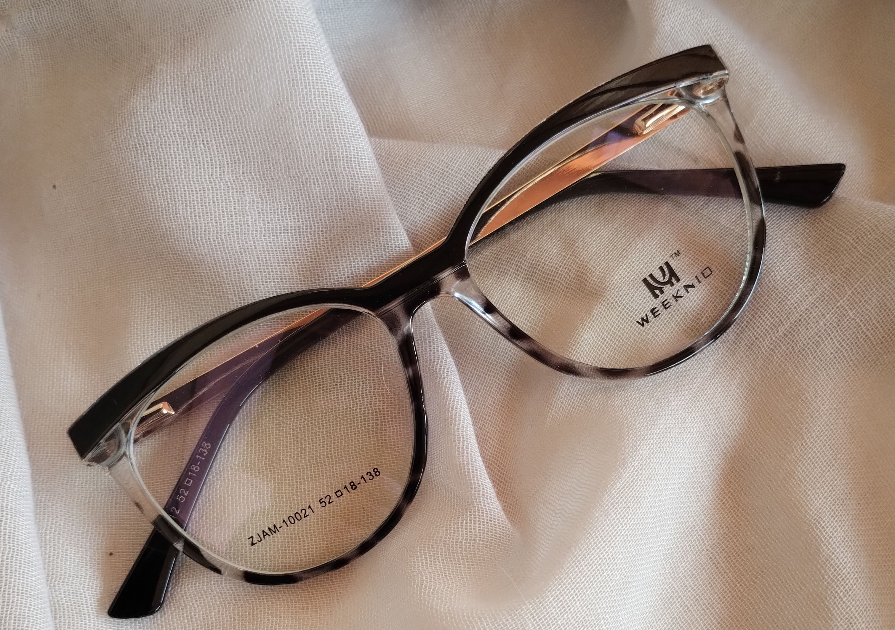
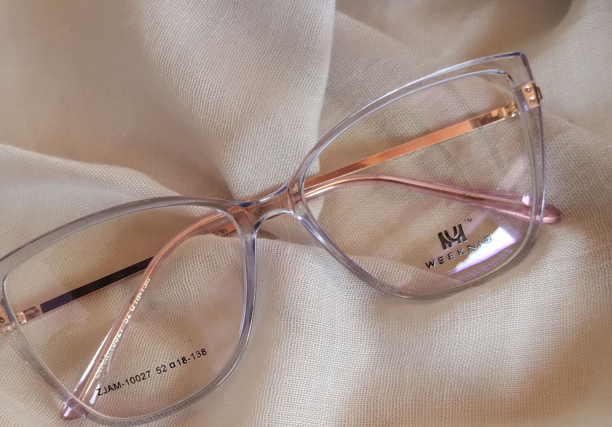
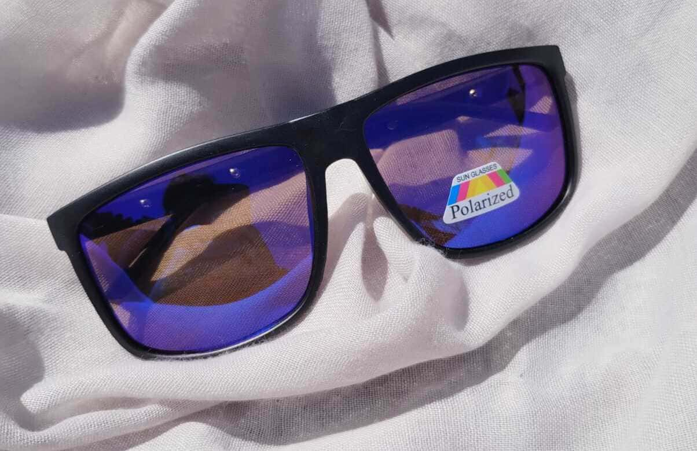

Modelos y Caracteristicas
En Colette Collection, entendemos que la vista es uno de nuestros sentidos más valiosos. Por eso, nos dedicamos a ofrecerte soluciones ópticas personalizadas que combinan tecnología de vanguardia con un estilo excepcional.


Tipos
Org. Blancos
Organico Blanco
Algunas ventajas destacables de estos lentes es que son muy resistentes a las roturas, su densidad es menor, lo que las hace mucho más ligeras, filtra los rayos UV en un 98 %.
Blue cut
Blue cut
Blue cut es el tratamiento que protege tus ojos bloqueando la radiacion de luz azul procedente de pantallas led como moviles, tablets, monitores, televisores, etc.
Gafas de sol
Gafas de Sol
Descubre el equilibrio perfecto entre estilo y protección con nuestras gafas de sol. Diseñadas para realzar tu look mientras protegen tus ojos de los rayos dañinos del sol. ¡No te conformes con menos!.
- Reducción de la Fatiga Ocular: Al reducir la exposición a la luz azul, los lentes Blue Cut pueden disminuir la fatiga ocular, especialmente durante largas horas frente a pantallas.
- Menor Riesgo de Problemas de Sueño: La luz azul puede interferir con la producción de melatonina, una hormona que regula el sueño. Estos lentes pueden ayudar a mejorar la calidad del sueño al minimizar la exposición a la luz azul antes de dormir.
- Protección contra Daño Ocular a Largo Plazo: Se cree que la exposición prolongada a la luz azul puede contribuir a problemas de salud ocular a largo plazo, como la degeneración macular. Los lentes Blue Cut ayudan a proteger los ojos de estos posibles daños.
- Reducción de Reflejos y Deslumbramiento: Estos lentes pueden disminuir los reflejos y el deslumbramiento que se producen al mirar pantallas brillantes, mejorando la claridad visual y la comodidad.
Beneficios de los Lentes Blue Cut
- Ligereza: Los lentes orgánicos blancos son notablemente más ligeros que los lentes de vidrio. La reducción en el peso hace que las gafas sean más cómodas de usar durante períodos prolongados, aliviando la presión en el puente de la nariz y las orejas.
- Resistencia a los Impactos:Están fabricados con materiales plásticos como el policarbonato o el Trivex, que son más resistentes a los impactos que el vidrio. Esta característica reduce el riesgo de que los lentes se rompan o astillen, ofreciendo una mayor seguridad, especialmente en entornos activos o para personas con niños pequeños.
- Claridad Visual: Los lentes orgánicos blancos están diseñados para ofrecer una excelente claridad visual sin distorsiones significativas. Proporcionan una visión nítida y precisa, lo cual es esencial para la corrección visual y la comodidad general.
- Menor Riesgo de Daños por Rotura: A diferencia de los lentes de vidrio, los lentes orgánicos blancos son menos propensos a romperse en fragmentos afilados. Esto reduce el riesgo de lesiones oculares en caso de accidente o caída.
Beneficios de los Lentes Organico Blanco
- Protección Contra los Rayos UV: Las gafas de sol con lentes que bloquean los rayos UV protegen los ojos de los daños causados por la exposición a la radiación ultravioleta del sol. Esto ayuda a prevenir enfermedades oculares como la catarata, la degeneración macular y el daño en la córnea.
- Reducción del Deslumbramiento: Los lentes de sol con recubrimientos polarizados ayudan a reducir el deslumbramiento causado por la luz solar reflejada en superficies como el agua, el hielo o el pavimento. Esto mejora la claridad visual y la comodidad, especialmente al conducir o al practicar deportes al aire libre.
- Protección Contra la Fatiga Ocular: La exposición prolongada a la luz solar intensa puede causar fatiga ocular y estrés visual. Las gafas de sol protegen los ojos de la luz intensa, reduciendo la fatiga ocular y haciendo que la visión sea más cómoda en entornos soleados.
- Prevención de Daños en la Piel alrededor de los Ojos: La piel alrededor de los ojos es especialmente delicada y susceptible a los daños causados por la exposición solar. Usar gafas de sol ayuda a proteger esta área sensible del riesgo de quemaduras solares y del envejecimiento prematuro de la piel, como arrugas y manchas.